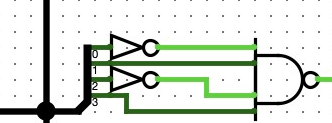
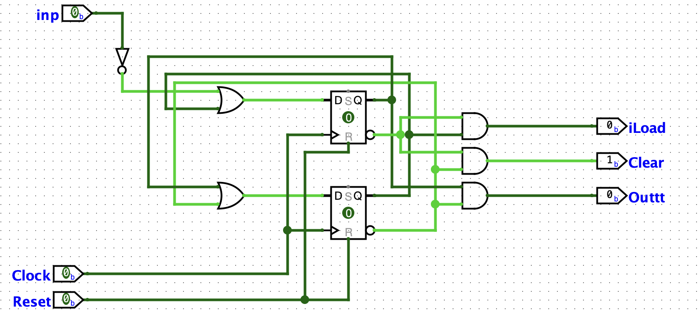
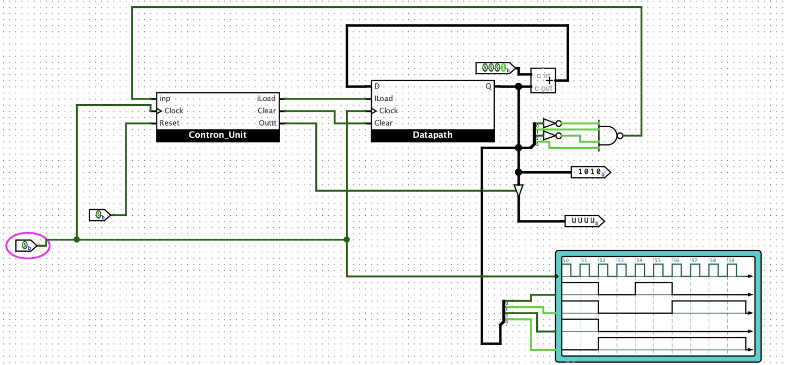
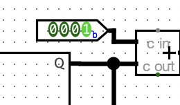
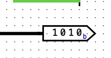

รายงานการทดลอง
วงจรนับเลข 1 ถึง 10
(Counting 1 to 10)
ด้วยโปรแกรม Logisim-Evolution
ระบบนับเลขฐานสอง (Binary) อัตโนมัติ ด้วยวงจร Counter, สัญญาณ Clock
และการตรวจจับค่าด้วย Logic Gate
จัดทำโดย
| 1 | นายดรัณภพ พิทักษ์กิจไพศาล | 6710301007 |
| 2 | นายอภิสักก์ คงภักดี | 6710301009 |
| 3 | นายธนัท จงธีรธนโชติ | 6710301032 |
เสนอ อาจารย์คทาเทพ สวัสดิพิศาล
รายวิชา Embedded System ภาคการศึกษาที่ 1 ปีการศึกษา 2569
1บทนำ (Introduction)
รายงานฉบับนี้จัดทำขึ้นเพื่อนำเสนอการออกแบบและสร้างวงจรนับเลข (Counter) ที่สามารถนับเลขจาก 1 ถึง 10
โดยแสดงผลตาม Clock โดยใช้โปรแกรมจำลองวงจรดิจิทัลชื่อ Logisim-Evolution ซึ่งเป็นโปรแกรมฟรีที่นิยมใช้ในการเรียน
การสอนวิชาวงจรดิจิทัล เพราะสามารถวางอุปกรณ์ ลากสายไฟ และดูการทำงานของวงจรได้ทันทีบนหน้าจอ
โดยไม่ต้องต่อวงจรจริง
วงจรนับเลข (Counter) เป็นวงจรพื้นฐานที่สำคัญมากในระบบดิจิทัล พบได้ในอุปกรณ์รอบตัวเรา เช่น นาฬิกาดิจิทัล
เครื่องนับจำนวนคนเข้าร้าน หรือไฟจราจรที่นับเวลาถอยหลัง หลักการทำงานคือ วงจรจะรับสัญญาณ Clock ซึ่งเป็น
สัญญาณไฟฟ้าที่สลับค่า 0 กับ 1 เป็นจังหวะสม่ำเสมอ (คล้ายเสียงเข็มวินาทีของนาฬิกา) แล้วนับเพิ่มค่าขึ้นทีละ 1
ทุกครั้งที่ Clock มาหนึ่งจังหวะ ค่าที่นับได้จะถูกเก็บและแสดงผลในรูปเลขฐานสอง (Binary)
ในงานชิ้นนี้ กลุ่มของเราออกแบบวงจรให้นับตั้งแต่ 1 ไปจนถึง 10 และเมื่อนับถึง 10 แล้ว วงจรจะค้างที่ค่า 10
เพื่อคอยให้ผู้ใช้กดปุ่ม Reset เพื่อเริ่มนับรอบใหม่ โดยรายงานจะอธิบายแนวคิดการออกแบบ ขั้นตอนการสร้างวงจร
ผลการทดสอบ รวมถึงปัญหาที่พบระหว่างทำงานและวิธีแก้ไข
2วัตถุประสงค์ (Objectives)
- เพื่อออกแบบและสร้างวงจรนับเลข (Counter) จาก 1 ถึง 10 ด้วยโปรแกรม Logisim-Evolution
- เพื่อศึกษาการทำงานของสัญญาณ Clock ที่ใช้ควบคุมจังหวะการนับของวงจร
- เพื่อศึกษาการเก็บค่าและการแสดงผลตัวเลขในรูปแบบเลขฐานสอง (Binary)
- เพื่อศึกษาการออกแบบวงจรแบบแยกส่วนควบคุม (Control Unit) และส่วนประมวลผลข้อมูล (Datapath)
- เพื่อฝึกการทดสอบวงจร ตรวจสอบความถูกต้อง และแก้ไขปัญหาที่เกิดขึ้นจริง
3เครื่องมือที่ใช้ (Tools Used)
3.1 โปรแกรมที่ใช้
Logisim-Evolution — โปรแกรมจำลองวงจรดิจิทัลที่ใช้ออกแบบ ต่อวงจร และทดสอบการทำงานทั้งหมดในงานชิ้นนี้
3.2 อุปกรณ์ (Component) หลักที่ใช้ภายในวงจร
ตารางที่ 1 อุปกรณ์หลักที่ใช้ในวงจรและหน้าที่ของแต่ละตัว
| อุปกรณ์ | หน้าที่ในวงจร |
|---|
| Clock | สร้างสัญญาณจังหวะ 0/1 สลับกันสม่ำเสมอ เพื่อกำหนดจังหวะการนับ |
| Register (สร้างจาก Flip-Flop) | เก็บค่าตัวเลขปัจจุบันขนาด 4 บิต ค่าจะเปลี่ยนเมื่อ Clock มาเท่านั้น |
| Adder (วงจรบวก) | บวกค่าคงที่ 0001 เข้ากับค่าเดิม เพื่อให้ได้ค่าถัดไป (นับเพิ่มทีละ 1) |
| NOT Gate และ NAND Gate | ใช้ตรวจจับว่าค่าที่นับถึงเลข 10 (Binary = 1010) แล้วหรือยัง |
| Input Pin (Reset) | ปุ่มสั่งให้วงจรกลับไปเริ่มนับใหม่ด้วยมือ |
| Output Pin / Probe | แสดงค่าที่นับได้ในรูปเลขฐานสอง (Binary) 4 บิต |
| Oscilloscope (Chronogram) | แสดงกราฟสัญญาณแต่ละเส้นเทียบกับเวลา เพื่อดูจังหวะการนับ |
4แนวคิดการออกแบบวงจร (Circuit Design Concept)
4.1 ทำไมต้องใช้ 4 บิต
การจะนับถึงเลข 10 ต้องใช้เลขฐานสอง (Binary) อย่างน้อย 4 บิต เพราะ 3 บิตเก็บค่าได้มากที่สุดแค่ 7 (111)
แต่ 4 บิตเก็บได้ถึง 15 (1111) ซึ่งเพียงพอสำหรับเลข 10 (1010) ดังนั้นวงจรทั้งหมดจึงออกแบบบนข้อมูลขนาด 4 บิต
4.2 โครงสร้างหลักของวงจร
กลุ่มของเราออกแบบโดยแบ่งวงจรออกเป็น 2 ส่วนใหญ่ ตามแนวคิดเดียวกับการออกแบบหน่วยประมวลผล คือ
- Datapath (ส่วนข้อมูล) — ทำหน้าที่เก็บค่าและคำนวณค่าถัดไป ภายในมี Register ขนาด 4 บิต
ที่สร้างจาก Flip-Flop ไว้เก็บค่าปัจจุบัน และมีวงจรบวก (Adder) ที่นำค่าปัจจุบันมาบวกกับค่าคงที่ 0001
แล้วส่งผลลัพธ์วนกลับไปที่ขา D ของ Register ทำให้ทุกครั้งที่ Clock มาขอบขาขึ้น ค่าใน Register
จะเพิ่มขึ้นทีละ 1 โดยอัตโนมัติ
- Control Unit (ส่วนควบคุม) — ทำหน้าที่เป็น “สมอง” คอยตัดสินใจว่าเมื่อไรจะให้ Datapath
นับต่อ และเมื่อไรจะสั่งเริ่มรอบใหม่ โดยรับสัญญาณแจ้งเตือนว่านับถึง 10 แล้ว และรับสัญญาณ Reset จากผู้ใช้
แล้วส่งคำสั่งควบคุม (iLoad และ Clear) กลับไปยัง Datapath
เปรียบเทียบง่าย ๆ : Datapath เหมือน “มือ” ที่คอยขยับลูกคิดนับเลข ส่วน Control Unit
เหมือน “สมอง” ที่คอยสั่งว่าเมื่อไรให้นับต่อ เมื่อไรให้ล้างกระดานเริ่มใหม่
รูปที่ 1 โครงสร้างการทำงานของวงจร — Control Unit สั่งงาน Datapath และวนรับสัญญาณจากตัวตรวจจับเลข 10
หมายเหตุ : สัญญาณ Clock ต่อเข้าทั้ง Control Unit และ Datapath พร้อมกัน เพื่อให้ทั้งสองส่วน
ทำงานสอดคล้องกันในทุกจังหวะ (แบบ Synchronous)
4.3 การตรวจจับเลข 10
เลข 10 ในฐานสองคือ 1010 (บิต 3 = 1, บิต 2 = 0, บิต 1 = 1, บิต 0 = 0) กลุ่มของเราจึงนำเอาต์พุต Q ทั้ง 4 บิต
ของ Register มาเข้าวงจรตรวจสอบ โดยบิตที่ต้องเป็น 0 (บิต 0 และบิต 2) จะผ่าน NOT Gate กลับค่าให้เป็น 1 ก่อน
แล้วนำทั้ง 4 สัญญาณเข้า NAND Gate ผลคือเอาต์พุตของ NAND จะเปลี่ยนค่าก็ต่อเมื่อค่าที่นับเป็น 1010 พอดีเท่านั้น
สัญญาณนี้จะถูกส่งกลับไปบอก Control Unit ว่า “ครบ 10 แล้ว”

รูปที่ 2 วงจรตรวจจับค่า 10 — ใช้ NOT Gate ที่บิต 0 และบิต 2 ก่อนเข้า NAND Gate
4.4 การวนกลับไปเริ่มใหม่
เมื่อผู้ใช้กดปุ่ม Reset หลังจากที่วงจรนับถึง 10 วงจรจะส่งสัญญาณควบคุมไปยัง Register
ของ Datapath เพื่อล้างค่าเดิมทิ้งและกลับไปตั้งต้นใหม่ จากนั้นการนับรอบถัดไปจะเริ่มที่ 1 แล้วไล่ขึ้นไปจนถึง 10
โดยจะค้างที่ค่า 10 เพื่อคอยการ Reset
5ขั้นตอนการสร้างวงจร (Implementation)
5.1 สร้างไฟล์และวงจรย่อย
เปิดโปรแกรม Logisim-Evolution สร้างไฟล์งานใหม่ แล้วสร้างวงจรย่อย (Subcircuit) ขึ้น 2 วงจร คือ Datapath
สำหรับส่วนข้อมูล และ Control Unit สำหรับส่วนควบคุม การแยกเป็นวงจรย่อยช่วยให้วงจรหลักดูสะอาด อ่านง่าย
และแก้ไขทีละส่วนได้สะดวก
5.2 สร้าง Datapath
ภายใน Datapath วาง Register ขนาด 4 บิต (สร้างจาก Flip-Flop) กำหนดขาเข้า D, ILoad, Clock, Clear
และขาออก Q จากนั้นทดสอบเบื้องต้นว่า Register เก็บค่าและเคลียร์ค่าได้ถูกต้อง
 รูปที่ 3 วงจรภายในส่วน Datapath — Register 4 บิต รับขา D, ILoad, Clock, Clear และให้เอาต์พุต Q
รูปที่ 3 วงจรภายในส่วน Datapath — Register 4 บิต รับขา D, ILoad, Clock, Clear และให้เอาต์พุต Q
5.3 ต่อวงจรบวกเพิ่มค่าทีละ 1
วาง Adder ที่วงจรหลัก ต่อค่าคงที่ 0001 เข้าขาหนึ่งของ Adder และต่อเอาต์พุต Q ของ Register เข้าอีกขาหนึ่ง
แล้วนำผลบวกวนกลับไปเข้าขา D ของ Register เท่านี้ทุกจังหวะ Clock ค่าใน Register ก็จะเพิ่มขึ้นทีละ 1
5.4 สร้างวงจรตรวจจับเลข 10
นำสาย Q ทั้ง 4 บิตมาแยกบิตด้วย Splitter บิตที่ต้องเป็น 0 (บิต 0 และบิต 2) ต่อผ่าน NOT Gate แล้วนำทั้ง 4 เส้น
เข้า NAND Gate เอาต์พุตของ NAND คือสัญญาณแจ้งว่า “นับถึง 10 แล้ว” ต่อสัญญาณนี้กลับไปที่ขา inp ของ Control Unit
5.5 สร้าง Control Unit
ออกแบบ Control Unit ให้รับสัญญาณ inp (ตรวจพบเลข 10), Clock และ Reset แล้วสร้างสัญญาณควบคุม iLoad
และ Clear ส่งไปยัง Datapath เพื่อสั่งให้ Register โหลดค่าหรือล้างค่ากลับไปเริ่มต้นเมื่อถึงเงื่อนไข

รูปที่ 4 วงจรภายในส่วน Control Unit — ใช้ D Flip-Flop เก็บสถานะ ร่วมกับ Logic Gate สร้างสัญญาณ iLoad, Clear และ Outtt
5.6 ประกอบวงจรหลัก
นำ Control Unit และ Datapath มาวางในวงจรหลัก ต่อ Clock เส้นเดียวกันเข้าทั้งสองส่วนเพื่อให้ทำงานพร้อมกัน
ต่อปุ่ม Reset ต่อ Output Pin แสดงค่า Binary และต่อ Oscilloscope เพื่อดูกราฟสัญญาณขณะวงจรทำงาน
ได้ผลลัพธ์เป็นวงจรหลักที่สมบูรณ์ดังรูปที่ 5
5.7 ทดสอบการทำงาน
เปิดการจำลอง (Simulate) แล้วสั่งให้ Clock เดินอัตโนมัติ (Auto-Tick) สังเกตค่าที่ Output Pin และกราฟบน
Oscilloscope ว่านับ 1 ถึง 10 แล้ววนกลับถูกต้องหรือไม่ รวมถึงทดลองกด Reset ระหว่างนับเพื่อดูว่าวงจรกลับไป
เริ่มต้นได้จริง
 รูปที่ 5 วงจรนับเลข 1 ถึง 10 ที่ต่อเสร็จสมบูรณ์ใน Logisim-Evolution (Control Unit, Datapath, วงจรบวก, ตัวตรวจจับเลข 10 และ Oscilloscope)
รูปที่ 5 วงจรนับเลข 1 ถึง 10 ที่ต่อเสร็จสมบูรณ์ใน Logisim-Evolution (Control Unit, Datapath, วงจรบวก, ตัวตรวจจับเลข 10 และ Oscilloscope)
6ผลการทดสอบ (Testing Results)
กลุ่มของเราทดสอบโดยเปิดโหมดจำลองการทำงาน แล้วให้ Clock เดินอัตโนมัติ จากนั้นจดค่าที่แสดงบน Output Pin
ในแต่ละจังหวะ Clock ผลปรากฏว่าวงจรนับค่าเพิ่มขึ้นทีละ 1 ตั้งแต่ 1 ไปจนถึง 10 ได้ถูกต้อง และเมื่อถึง 10
(Binary = 1010) วงจรตรวจจับทำงาน ส่งผลให้วงจรค้างที่ค่า 10 เพื่อคอยการ Reset จากผู้ใช้ ดังตารางต่อไปนี้
ตารางที่ 2 ผลการนับค่าของวงจรในแต่ละจังหวะ Clock
| จังหวะ Clock ที่ |
ค่าที่นับ (ฐานสิบ) |
ค่าที่แสดง (Binary)
Q3 Q2 Q1 Q0 |
หมายเหตุ |
| 1 | 1 | 0 0 0 1 | เริ่มนับ |
| 2 | 2 | 0 0 1 0 | |
| 3 | 3 | 0 0 1 1 | |
| 4 | 4 | 0 1 0 0 | |
| 5 | 5 | 0 1 0 1 | |
| 6 | 6 | 0 1 1 0 | |
| 7 | 7 | 0 1 1 1 | |
| 8 | 8 | 1 0 0 0 | |
| 9 | 9 | 1 0 0 1 | |
| 10 | 10 | 1 0 1 0 | ครบ 10 (ค้างรอ Reset) |
| 11 | 1 | 0 0 0 1 | เริ่มใหม่เมื่อกด Reset |
นอกจากนี้ยังทดสอบปุ่ม Reset โดยกดระหว่างที่วงจรกำลังนับอยู่ พบว่าค่าจะกลับไปที่จุดเริ่มต้นทันทีและเริ่มนับ 1
ใหม่ตามที่ออกแบบไว้ ส่วนกราฟจาก Oscilloscope แสดงให้เห็นว่าแต่ละบิตของเอาต์พุตเปลี่ยนค่าสัมพันธ์กับขอบสัญญาณ
Clock อย่างเป็นจังหวะ ซึ่งยืนยันว่าวงจรทำงานแบบ Synchronous (เปลี่ยนค่าพร้อมกันตามจังหวะ Clock) จริง

รูปที่ 6 การทำงานจริงขณะวงจรนับถึง 10 — Output Pin แสดงค่า 1010 ก่อนผู้ใช้กด Reset
 รูปที่ 7 กราฟสัญญาณ (Chronogram) — แถวบนสุดคือ Clock ส่วนแถวถัดลงมาคือค่าของแต่ละบิตที่เปลี่ยนตามจังหวะการนับ
รูปที่ 7 กราฟสัญญาณ (Chronogram) — แถวบนสุดคือ Clock ส่วนแถวถัดลงมาคือค่าของแต่ละบิตที่เปลี่ยนตามจังหวะการนับ
7ปัญหาที่พบและวิธีแก้ไข (Problems & Solutions)
ปัญหา 7.1 : วงจรไม่ยอมนับ ค่าไม่เปลี่ยนแม้ Clock เดินอยู่
วิธีแก้ไข : ตรวจสอบพบว่าต่อสัญญาณ Clock เข้าไม่ครบทั้ง Control Unit และ Datapath
แก้ไขโดยลากสาย Clock จากแหล่งเดียวกันเข้าทั้งสองส่วน ทำให้วงจรกลับมานับได้ตามปกติ
ปัญหา 7.2 : วงจรไม่ Reset เมื่อนับถึง 10
วิธีแก้ไข : สาเหตุมาจากต่อบิตเข้า NOT Gate ผิดตำแหน่งในวงจรตรวจจับ ทำให้ตรวจไม่เจอค่า 1010
แก้ไขโดยเขียนค่า Binary ของเลข 10 ลงกระดาษก่อน (1010) แล้วไล่ตรวจทีละบิตว่าบิตที่ต้องเป็น 0 คือบิต 0 กับบิต 2
จึงย้าย NOT Gate มาไว้ที่สองบิตนี้ วงจรจึงตรวจจับได้ถูกต้อง
ปัญหา 7.3 : สายไฟพันกันจนไล่วงจรยากและต่อผิดจุด
วิธีแก้ไข : ช่วงแรกวางอุปกรณ์ทั้งหมดในวงจรเดียว สายไฟทับกันจนหาจุดผิดยาก แก้ไขโดยแยกวงจร
ออกเป็น Subcircuit (Control Unit กับ Datapath) แล้วจัดวางตำแหน่งใหม่ ทำให้วงจรอ่านง่ายขึ้นมากและหาจุดผิดได้เร็ว
ปัญหา 7.4 : สับสนเรื่องจังหวะที่ค่าเปลี่ยน
วิธีแก้ไข : ตอนแรกเข้าใจว่าค่าจะเปลี่ยนทันทีที่ต่อวงจรเสร็จ แต่จริง ๆ Register ที่สร้างจาก Flip-Flop
จะเปลี่ยนค่าเฉพาะตอนขอบขาขึ้นของ Clock เท่านั้น แก้ไขโดยใช้ Oscilloscope ดูจังหวะสัญญาณประกอบ
ทำให้เข้าใจการทำงานแบบ Synchronous มากขึ้น
8สรุปผล (Conclusion)
กลุ่มของเราสามารถออกแบบและสร้างวงจรนับเลข (Counter) จาก 1 ถึง 10 ด้วยโปรแกรม Logisim-Evolution
ได้สำเร็จตามวัตถุประสงค์ วงจรใช้สัญญาณ Clock ควบคุมจังหวะการนับ โดยค่าจะเพิ่มขึ้นทีละ 1 ทุกจังหวะ เก็บค่าไว้ใน
Register ที่สร้างจาก Flip-Flop และแสดงผลในรูปเลขฐานสอง (Binary) ขนาด 4 บิต เมื่อนับถึง 10 วงจรตรวจจับค่า 1010
จะค้างที่ค่า 10 เพื่อรอผู้ใช้กดปุ่ม Reset จึงเริ่มใหม่ ผลการทดสอบตรงตามตารางที่ออกแบบไว้ทุกจังหวะ
สิ่งที่ได้เรียนรู้จากงานชิ้นนี้ ได้แก่ การทำงานของ Flip-Flop และ Register, บทบาทของสัญญาณ Clock ในวงจรแบบ
Synchronous, การใช้ Logic Gate (NOT, NAND) ตรวจจับค่าที่ต้องการ และแนวคิดการแบ่งวงจรเป็น Control Unit
กับ Datapath ซึ่งเป็นพื้นฐานเดียวกับการออกแบบหน่วยประมวลผลจริง นอกจากนี้ยังได้ฝึกการไล่หาจุดผิดของวงจร
(Debug) อย่างเป็นระบบ
แนวทางการพัฒนาต่อ : สามารถต่อยอดโดยนำเอาต์พุต Binary ไปเข้าวงจรถอดรหัสเพื่อแสดงผลบน
7-Segment Display ให้อ่านเป็นตัวเลขได้ง่ายขึ้น หรือปรับช่วงการนับเป็นค่าอื่น ๆ เช่น นับ 0 ถึง 59
เพื่อใช้ทำนาฬิกาดิจิทัลต่อไป
9ภาคผนวก (Appendix)
ส่วนนี้แสดงภาพขยายรายละเอียดบางส่วนของวงจร เพื่อให้เห็นการทำงานภายในชัดเจนยิ่งขึ้น

รูปที่ 8 วงจรบวกเพิ่มค่าทีละ 1 — นำค่า Q มาบวกกับค่าคงที่ 0001 ผ่าน Adder

รูปที่ 9 Output Pin แสดงผลเป็นเลขฐานสอง 1010 ซึ่งมีค่าเท่ากับ 10 ในเลขฐานสิบ